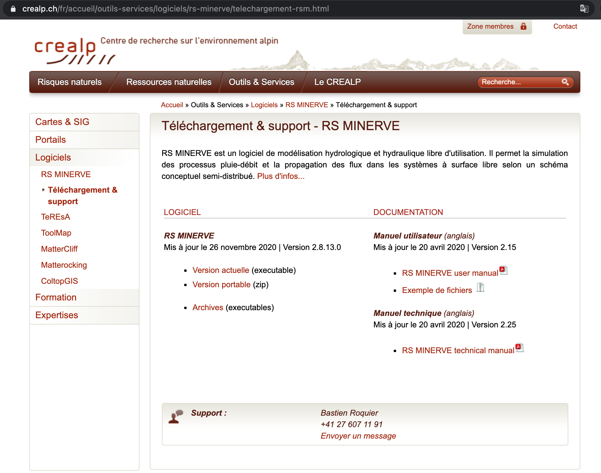

Software
Literature
Many authors of scientific literature are on the web platform researchgate where they can privately share their work with students (users need to register for an account).
QGIS
QGIS is a free and open source Geographical Information System that offers very similar tools as their commercial counterparts. The latest version of QGIS can be downloaded from the QGIS website. We recommend to install the stable long-term support version (installation guide).
Resources for learning QGIS
A general tutorial for beginners is the QGIS training manual. It includes a short chapter on the use of QGIS for hydrological analysis (Chapter 17.16). For this course you should be familiar with the QGIS window and know the difference between raster and vector data. If you have used QGIS or a similar GIS software before you will not need to do a tutorial prior to this course.
R and RStudio
R is a free and open source statistical programming language. It’s large user community ensure active development and up-to-date help resources available on the internet. RStudio is a free user interface for R. To install R and RStudio follow the installation guide on ModernDive - Statistical Inference via Data Science.
For the bare beginners, also with regard to programming, the book Hands-On Programming with R is an excellent start
Resources for learning R and R studio
- “Help! I’m new to R and RStudio and I need to learn them! What do I do?” If you’re asking yourself this, this book is for you: ModernDive - Statistical Inference via Data Science.
- A thorough guide for data science in R: R for Data Science
RS Minerve
How to download and install RS Minerve
Go to the software download page of CREALP’s website https://www.crealp.ch/fr/accueil/outils-services/logiciels/rs-minerve/telechargement-rsm.html (last accessed March 18, 2021) and click on Version actuelle to download the latest installer for Windows as shown in Figure 1. This will start the download process for the installer RSMinerve-install.exe.

You should also download the user manual (RS MINERVE user manual, written in English) and the example files used for the tutorials in the user manual (Exemple de fichiers, a zip file with data) as well as the technical manual (RS MINERVE technical manual, written in English).
Once the installer is downloaded, install RSMinerve with a double-click on the installer and follow the Setup guide. Open RSMinerve once you have it installed.